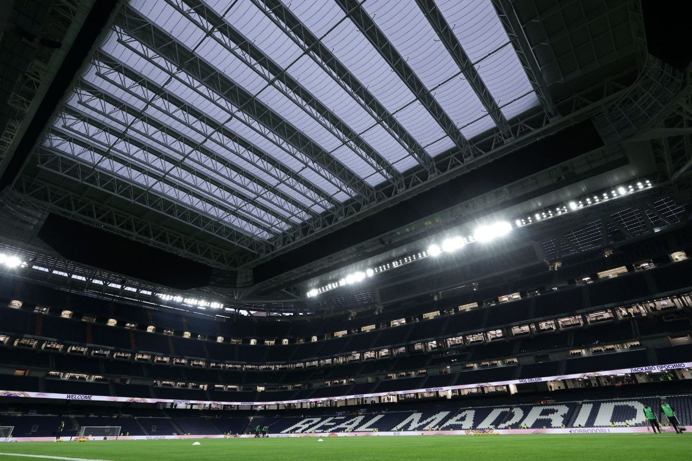

2017-2018 REAL MADRID haqida
Real Madrid (qirollik klubi) — futbol tarixidagi eng buyuk, eng mashhur va eng ko'p sovrin yutgan klublardan biri. 1902-yilda tashkil etilgan ushbu jamoa o'zining oq rangli liboslari tufayli "Los Blancos" (Oqlar) laqabi bilan ham tanilgan.
🏆 Yutuqlari bo'yicha mutloq rekordchi
- UEFA Chempionlar Ligasi: 15 marta (tarixdagi eng yuqori ko'rsatkich).
- La Liga (Ispaniya Chempionati): 36 marta chempionlik.
- FIFA tomonidan Real Madrid klubi "XX asrning eng yaxshi futbol klubi" deb tan olingan.
🏟 Uy stadioni
Jamoa o'z uy o'yinlarini Madrid shahrida joylashgan, dunyodagi eng muhtasham va zamonaviy stadionlardan biri — "Santiago Bernabéu"da o'tkazadi. Bu stadion yaqinda to'liq yangilandi va tepasi yopiladigan zamonaviy tom, ulkan ekranlar bilan jihozlandi.

⚔️ Eng ashaddiy raqobat: El Clasico
Real Madridning eng katta va murosasiz raqibi — "Barselona" klubidir. Bu ikki jamoa o'rtasidagi har bir o'yin "El Clasico" deb ataladi va butun dunyo bo'ylab yuz millionlab muxlislar tomonidan tomosha qilinadi.
✨ "Galacticos" va Afsonalar
- Alfredo Di Stefano va Ferenc Pushkash
- Zinedin Zidan, Ronaldo (Fenomen) va Raul
- Krishtianu Ronaldu (Klub tarixidagi eng yaxshi to'purar — 450 ta gol)
- Hozirgi davr yosh yulduzlari: Vinisius Junior, Jud Bellingem va Kilian Mbappe.
Krishtianu Ronalduning Rekordlari va Yutuqlari
Krishtianu Ronalduning Real Madriddagi 9 yillik (2009–2018) faoliyati futbol tarixidagi eng buyuk davrlardan biri hisoblanadi. U oq libosda shunday rekordlar o'rnatganki, ularni yangilash biron bir futbolchiga juda qiyin bo'ladi.
🚀 Mutloq To'purarlik Rekordlari
- Klub tarixidagi eng yaxshi to'purar: Ronaldu "Real Madrid" safida 438 ta o'yinda 450 ta gol urgan. U har bir o'yinga o'rtacha 1 tadan ko'p gol (1.03) to'g'ri keladigan dunyodagi yagona futbolchidir.
- Bir mavsumda eng ko'p gol urish bo'yicha mutloq rekordchi (17 ta gol, 2013/14-yilgi mavsumda).
- "Real Madrid" safida CHLda ketma-ket 11 ta o'yinda gol urgan yagona futbolchi.
🏆 Jamoaviy va Shaxsiy Sovrinlari
| Jamoaviy Kuboklar (16 ta) | Shaxsiy "Oltin" Sovrinlar |
|---|---|
| 4 marta UEFA Chempionlar Ligasi | 4 marta "Oltin to'p" (Ballon d'Or) |
| 2 marta La Liga | 3 marta "Oltin butsa" |
| 2 marta Ispaniya Qirol kubogi | 6 marta CHL eng yaxshi to'purari |
| 3 marta UEFA Superkubogi va JCH | 2 marta FIFA "The Best" mukofoti |